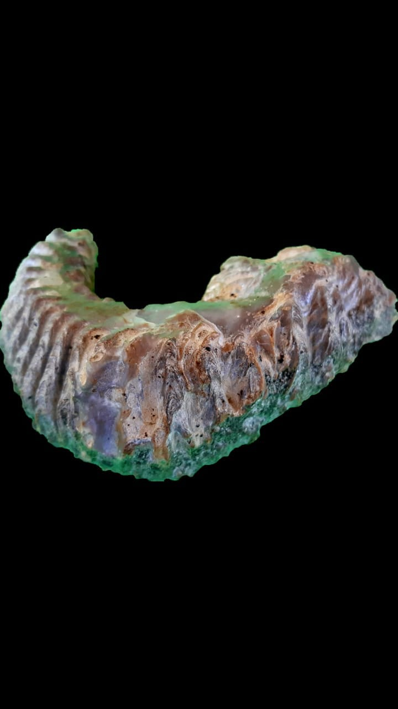

Registro multiângulo · base para 3D
Uma peça, mais de um ponto de vista.
Alterne as fotografias para perceber contorno, volume e textura. O par é o primeiro passo para uma futura captura por fotogrametria.
Para gerar um modelo 3D navegável, será necessária uma sequência completa de fotografias ao redor da peça.